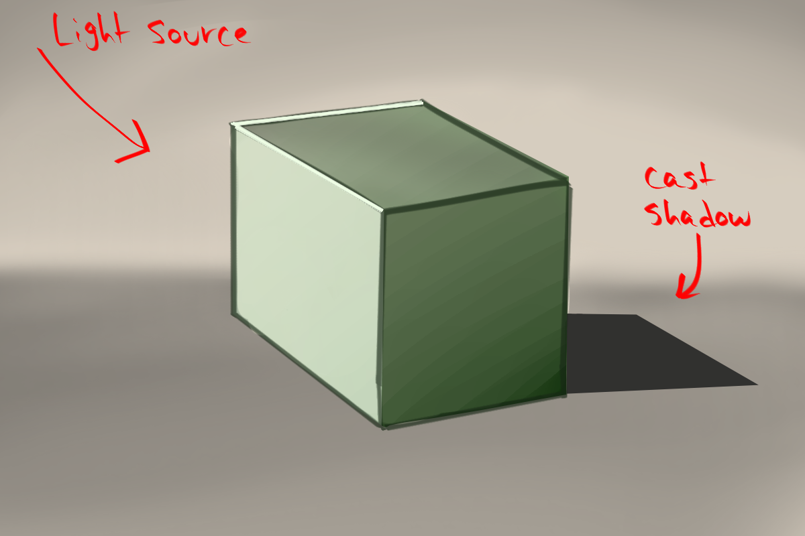

Shading & Lighting
Shading is an essential part of drawing that helps give objects depth, dimension, and a sense of form. By understanding how light interacts with different surfaces, you can make even simple drawings appear more three-dimensional.
Understanding Light and Value
Value refers to how light or dark something appears. In drawing, artists use a range of values to show how light falls across an object. The direction of the light source determines which areas appear brighter and which fall into shadow.
Some important lighting concepts include:
- Highlight: One of the brightest areas where light reflects toward the viewer.
- Midtone: An area between the lighter and darker values.
- Core Shadow: A darker area on a rounded form where the surface turns away from the light.
- Reflected Light: Light that bounces off nearby surfaces and softly illuminates shadowed areas.
- Cast Shadow: The shadow an object creates when it blocks light from reaching another surface.
Basic Shading Techniques
Artists use different shading techniques to create values and textures. Here are a few common methods worth practicing:
- Hatching: Using parallel lines to create darker values.
- Cross-Hatching: Layering intersecting lines to build up shadows and darker tones.
- Blending: Creating smooth transitions between light and dark values.
Each technique creates a different visual effect. Experiment with them to discover which methods you enjoy using!
Practice: Shading Simple Forms
A great way to practice shading is by starting with simple geometric forms, such as cubes, spheres, and cylinders.

Try drawing a cube and choosing a direction for your light source. Decide which faces receive the most light and which appear darker. Then add a cast shadow to show where the cube blocks the light.
Once you're comfortable with cubes, try shading a sphere or cylinder. Pay attention to how values change across curved surfaces.